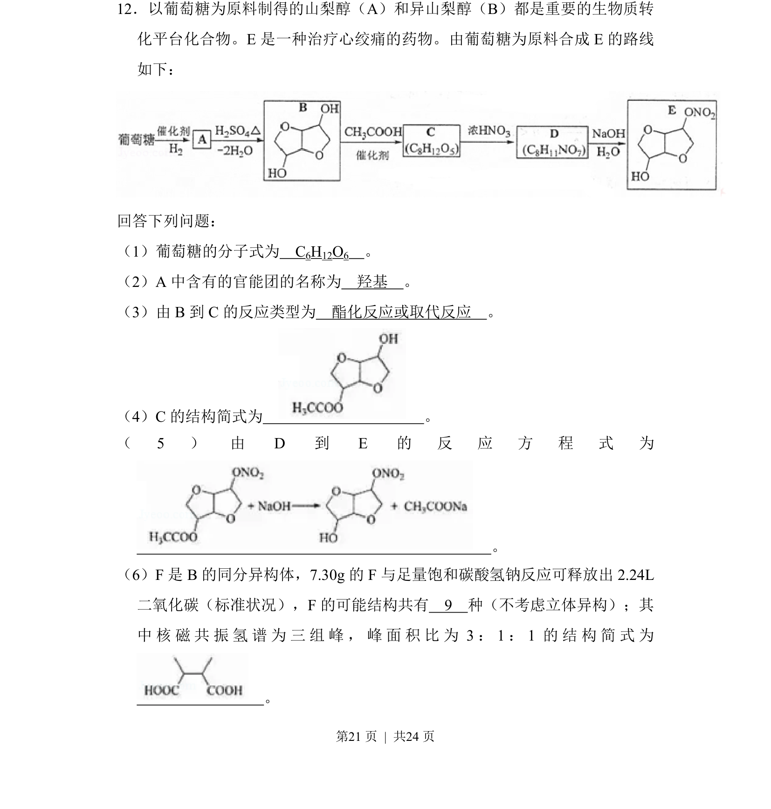
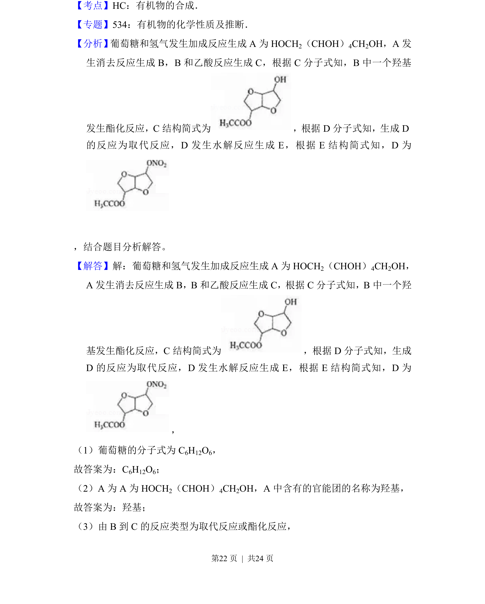
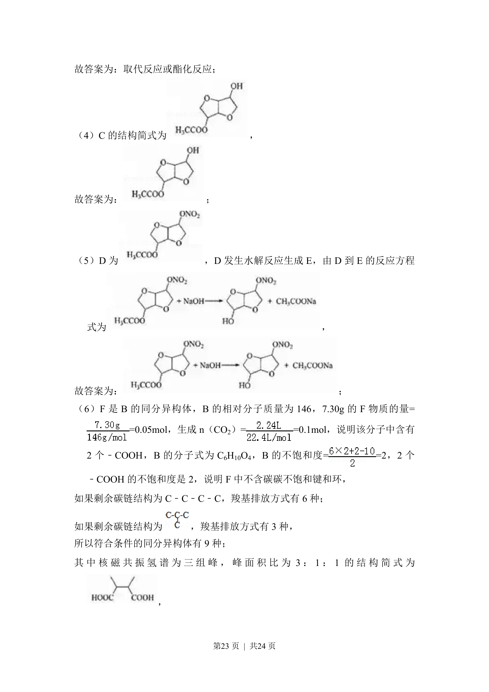
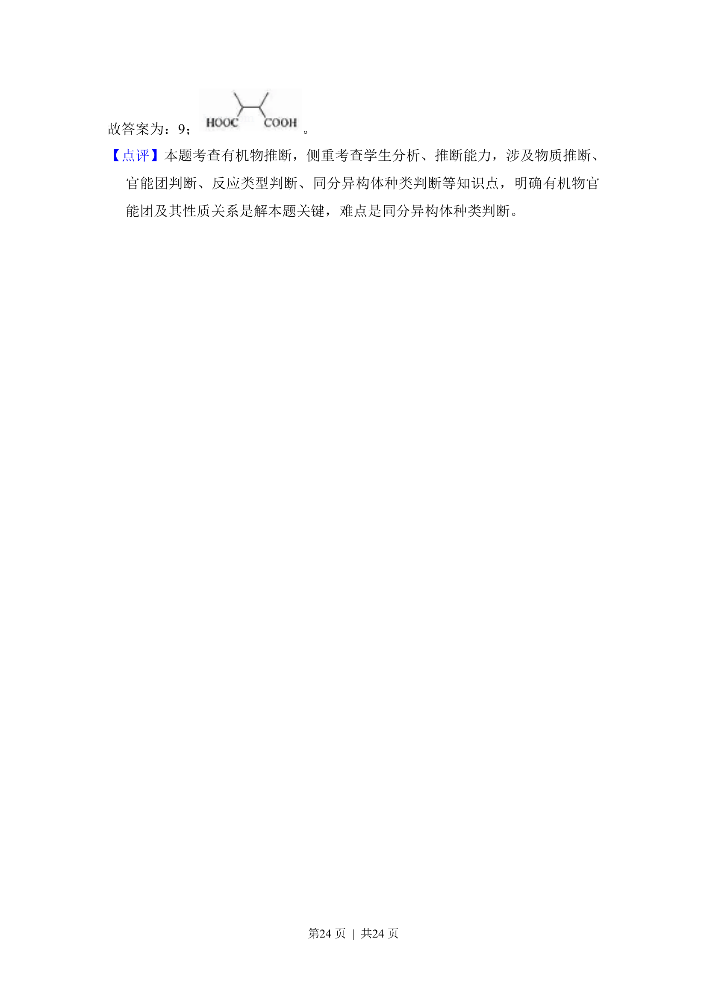

2018-新课标Ⅱ-12
考点：官能团识别 酯化反应 同分异构体计数 结构简式书写
题面


摘要
本题考查以葡萄糖为原料的有机合成路线推断，涉及官能团、反应类型、结构简式和同分异构体数目判断。
关联考点
答案与解析



📄 原 PDF 第 21 页：
素材/真题/吉林/2008-2024·（吉林）化学高考真题/2018年高考化学试卷（新课标Ⅱ）（解析卷）.pdf
题干文本
12．以葡萄糖为原料制得的山梨醇（A）和异山梨醇（B）都是重要的生物质转 化平台化合物。E是一种治疗心绞痛的药物。由葡萄糖为原料合成E的路线 如下： 回答下列问题： （1）葡萄糖的分子式为 C6H12O6 。 （2）A中含有的官能团的名称为 羟基 。 （3）由B到C的反应类型为 酯化反应或取代反应 。 （4）C的结构简式为 。 （5） 由D到E的 反 应 方 程 式 为 。 （6）F是B的同分异构体，7.30g的F与足量饱和碳酸氢钠反应可释放出2.24L 二氧化碳（标准状况），F的可能结构共有 9 种（不考虑立体异构）；其 中核磁共振氢谱为三组峰，峰面积比为3：1：1的结构简式为 。